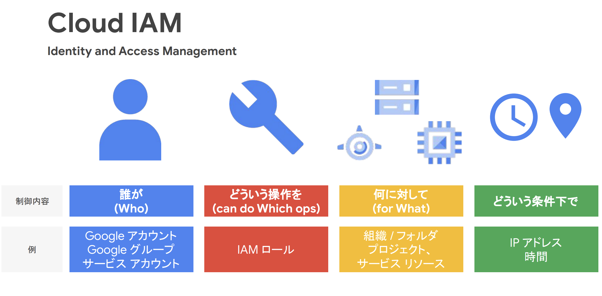
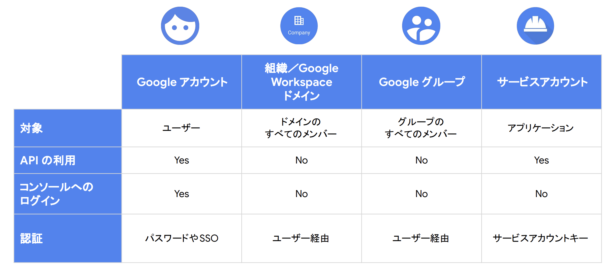

IAM¶
リソースやユーザーの管理にはIAM（Identity and Access Management）を利用する。
IAMを利用することで、誰が、どういう操作を、何に対して、どういう条件でを制御することができる。
AWSと同じような用語が用いられるがそれぞれで役割が異なるため注意する。
 まずは知っておくべき IAM の基礎と最新の便利機能
プリンシパル¶
誰がについては、principalとも呼ばれ、大きく以下の4つが対象となる。

まずは知っておくべき IAM の基礎と最新の便利機能
プリンシパルにはそれぞれメールアドレス形式の識別子がを持つ。
プリンシパルの種類 |
識別子形式 |
説明・特徴 |
|---|---|---|
Google アカウント |
user:alice@gmail.com |
個人のGoogleアカウント（Gmail や Workspace）。人間のユーザー。 |
Cloud Identity ドメイン |
domain:example.com |
ドメイン全体にIAM権限を付与。Google Workspace や Cloud Identity ドメインが対象。 |
Google グループ |
group:dev-team@example.com |
複数ユーザーを一括管理するメールグループ。IAM権限をまとめて付与可。 |
サービス アカウント |
serviceAccount:my-sa@project.iam.gserviceaccount.com |
アプリケーションやGCPサービスが操作するためのアイデンティティ。 |
IAM Role¶
どういう操作をについては、IAM Roleによって定義される。
Roleは、権限の集合体であり、RoleをPrincipalに付与することで、Roleに含まれるすべての権限が実行可能。
GCPでは拒否ポリシーが先にチェックされるため、拒否のルールを付与するとPrincipalによる操作を拒否することができる。
Roleを上位階層で適用すると、下位階層に順次適用される。
 Google Cloud Fundamentals: Core Infrastructure 日本語版
Google Cloud Fundamentals: Core Infrastructure 日本語版
Roleに関しては、おおきく3つが準備されており、事前定義Roleの利用を検討して、より細かい制御が必要な時にカスタムロールを利用する。
ロール種別 |
名称（英語） |
説明・特徴 |
カスタマイズ |
使用推奨度 |
例 |
|---|---|---|---|---|---|
基本ロール |
Primitive Roles |
プロジェクト全体への大雑把な権限（旧式） |
❌ できない |
🔻 非推奨 |
roles/editor |
事前定義ロール |
Predefined Roles |
Googleが用意した細かく設計されたロール |
❌ できない（そのまま使う） |
✅ 推奨 |
roles/compute.viewer |
カスタムロール |
Custom Roles |
ユーザーが必要な権限だけを指定して作成 |
✅ 可能 |
⭕ 条件付きで推奨 |
roles/custom.storageReader |
SA(Service Account)¶
サービスアカウントとは、ユーザーではなくて、プログラムやアプリケーション、仮想マシンに適用するためのプリンシパルである。 GCPのサービスにサービスアカウントをアタッチすることができる。 アタッチされたサービスは、サービスアカウントに付与された認可情報を利用して、別のリソースにアクセスすることができる。
イメージについては以下のように、VMに対してSAを割り当てることでCloudStorageへのアクセスを許可する。